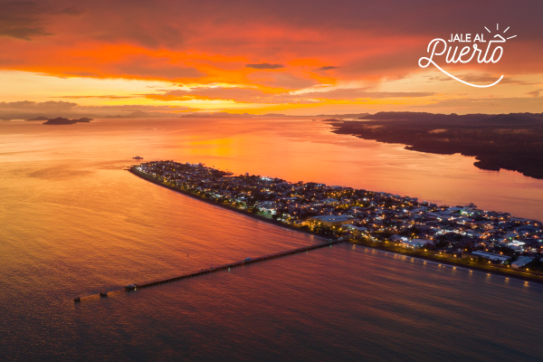

La ciudad conocida como "El Puerto"

Puntarenas es una ciudad portuaria en el Golfo de Nicoya, en Costa Rica. Su Casa de la Cultura alberga un teatro y una galería de arte. En la avenida principal, Paseo de los Turistas, el Parque Marino del Pacífico posee un acuario y un centro de rescate con caballos de mar, tortugas y cocodrilos. La playa de la ciudad, llamada Playa Puntarenas, cuenta con tiendas y cafeterías. Al sudeste, se encuentra Playa Doña Ana, conocida por su fuerte oleaje.